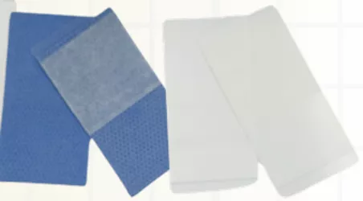

Used for special gowns that need to be used multiple times in a day. BNT 22 is a replacement of loop & hook (generically called Velcro)

Used for manufacturing of electrodes.
Typically used for covering the nose wire on the pouch.